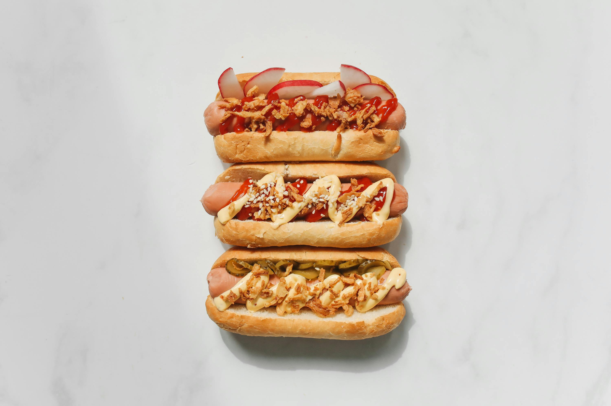

Home
Hotdog

Description
This recipe will walk you through how to make one of the easiest foods maybe ever. We will need a pan and a stovetop.
Ingredients
- Hotdog
- Hotdog Bun
- Ketchup
- Mustard
Steps
- Put your pan on your stovetop and turn the heat to medium. Let the pan heat up a little before cooking.
- Once pan is hot, add just the hotdog onto the pan.
- Let the hotdog cook until it starts to darken while turning it often. This should take about 7 minutes.
- Prepare your hotdog bun on a plate, opening them up.
- Remove the hotdog from the pan and put it into the bun.
- Add your ketchup and mustard, and enjoy!